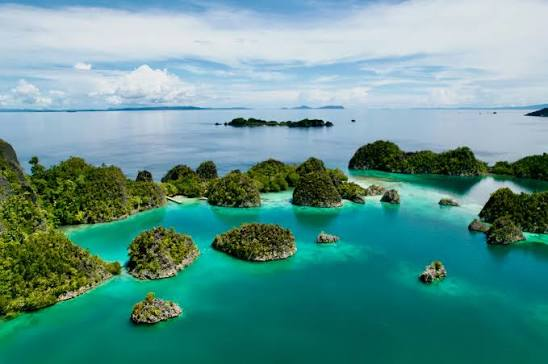

Estimated daily budget: $35
Best time to visit: Spring
Indonesia is a diverse, budget-friendly archipelago of over 17,000 islands offering an unforgettable mix of active volcanoes, ancient temples, world-class diving, and rare wildlife like Komodo dragons.
Quick Facts
Budget
$35/day
Best Time
Spring
Region
SE Asia
Why Indonesia?
Indonesia is a sprawling, budget-friendly archipelago of over 17,000 tropical islands that bridges Southeast Asia and Oceania. Visitors can marvel at ancient spiritual wonders like Borobudur temple, trek across dramatic volcanic landscapes, and encounter rare, endemic wildlife like Komodo dragons. From the world-class surf breaks of Bali to pristine, untouched diving reefs, it offers an unparalleled fusion of natural adventure and deep cultural heritage.
Places to Explore
Jakarta
Jakarta is Indonesia's dynamic, fast-paced capital where intrepid travellers can dive into a massive culinary scene, explore the country’s rich history in old Batavia, and experience some of Southeast Asia's best shopping and nightlife.
Yogyakarta
Yogyakarta is the cultural and artistic heart of Java, serving as the ultimate gateway to the breathtaking ancient temples of Borobudur and Prambanan while enchanting visitors with its living royal heritage, traditional batik crafts, and vibrant street art scene.
Mataram
Mataram is the unhurried capital of Lombok, where travelers can experience authentic Sasak and Balinese cultures by exploring centuries-old water palaces like Taman Mayura, visiting the grand Hubbul Wathan Islamic Center, and sampling legendary local street food like Ayam Taliwang.
Travel Tips
- Pack a multi-plug adapter to keep all your different devices charged without relying on hotel loaners.
- Scan your passport and visa to save digital copies in a secure cloud storage folder before leaving.
- Notify your bank of travel to prevent your credit cards from being frozen due to fraud alerts.
